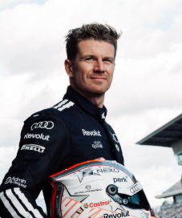

Nico Hülkenberg
Nico Hülkenberg
Team: Audi F1 Team
Team Principal: Andreas Seidl
Number: 27
Nationality: Germany
Debut: 2010
Born: 19 August 1987
History: German driver Nico Hülkenberg is widely respected as one of Formula 1’s most experienced and technically skilled competitors. Renowned for his qualifying performances and deep engineering understanding, Hülkenberg played an important role in multiple midfield teams throughout his career. Joining Audi’s ambitious Formula 1 project, he became a key figure in helping establish the manufacturer’s long-term competitiveness. By 2026, his leadership and experience remained highly valued within the paddock.
